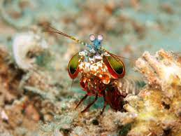

Stomatopoda
Fatos sobre o Stomatopoda
Informações gerais
O impressionante animal conhecido popularmente como lacraia-do-mar tem o nome científico de Odontodactylus scyllarus
Outras Informações relevantes sobre esse animal e seu parentesco com os animais da natureza se encontram a seguir
- Reino : Animalia
- Filo : Arthropoda
- Subfilo : Crustacea
- Classe : Malacostraca
- Subclasse : Hoplocarida
- Ordem : Stomatopoda
Sua fisiologia
Apresentam enorme variação de tamanho, podendo variar de milímetros até quase 40 centímetros Por incrível que pareça esse animal é um predador muito ativo que possui um sentido de visão extremamente aguçado
São animais exclusivamente carnívoros, alimentando-se de camarões, caranguejos, moluscos, peixes e até mesmo outros da mesma ordem. O segundo par de patas, muito desenvolvido, é usado tanto para atacar a presa como para se defender. O urópodo, quando aberto, também funciona para defesa, como um escudo, fechando a galeria em que o animal esteja instalado. A fêmea desova no local onde se abriga e, em caso de perigo, enrola os ovos como uma bola, prendendo-os junto ao corpo até encontrar um abrigo mais protegido.
Comportamentos sociais
São animais que apresentam comportamentos sociais muito variados, desde ameaças visuais contra predadores até comportamentos de côrte. De acordo com a anatomia da sua pata raptorial é possível distinguir entre dois grupos funcionais, as perfuradoras (spearers) ou as esmagadoras (smashers), sendo que cada um dos tipos apresenta sua própria variação comportamental e até mesmo de habitat
Onde posso encontrar?
Estomatópodes podem ser encontrados em quase todo o litoral brasileiro, mas não são animais fáceis de se observar pelos seus hábitos mais furtivos. Devem ser manuseados com muita cautela pois são animais preparados para se defender com força, caso sejam incomodados.
.jpeg)